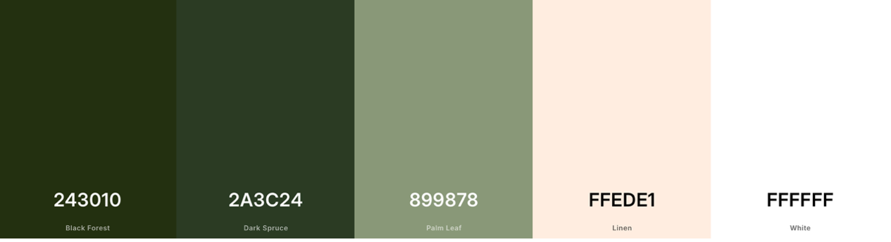
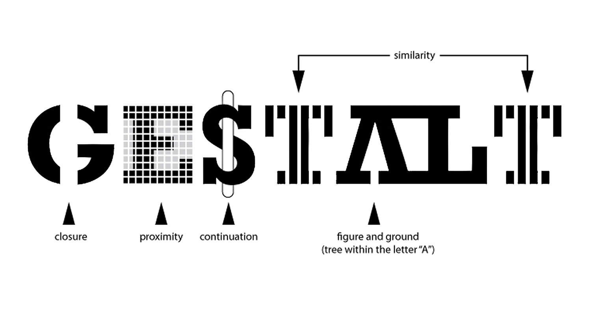

Visual Considerations for My Portfolio

Color palette
For my portfolio, I have used this color palette. I managed to use most of the colors, but not all of them. The most used colors are definitely Palm Leaf and Linen. Palm Leaf is used in both my header and footer. Linen is the background color on all pages. The colors are inspired by the colors I use in my own home. The walls in my apartment are exposed concrete, so I had to choose colors that matched the concrete walls. I liked the combination, so I decided to use similar colors for my portfolio.
Logo and typography
The logo uses the same colors as the color palette I chose for my portfolio. I also used Montserrat for the logo, which is the same font I use on the rest of the website. I wanted to keep the logo simple, so i used my name and initials. I also made a smaller version of the logo as a favicon, which is used in the browser tab

Gestalt principles
In my portfolio, I have used different Gestalt principles to make the website easier to understand and navigate. I have used proximity by placing text and images that belong together close to each other. I have also used similarity by using the same colors, font, rounded corners, and design throughout the website. Common region is used to group elements together, for example the images inside the white rounded boxes.